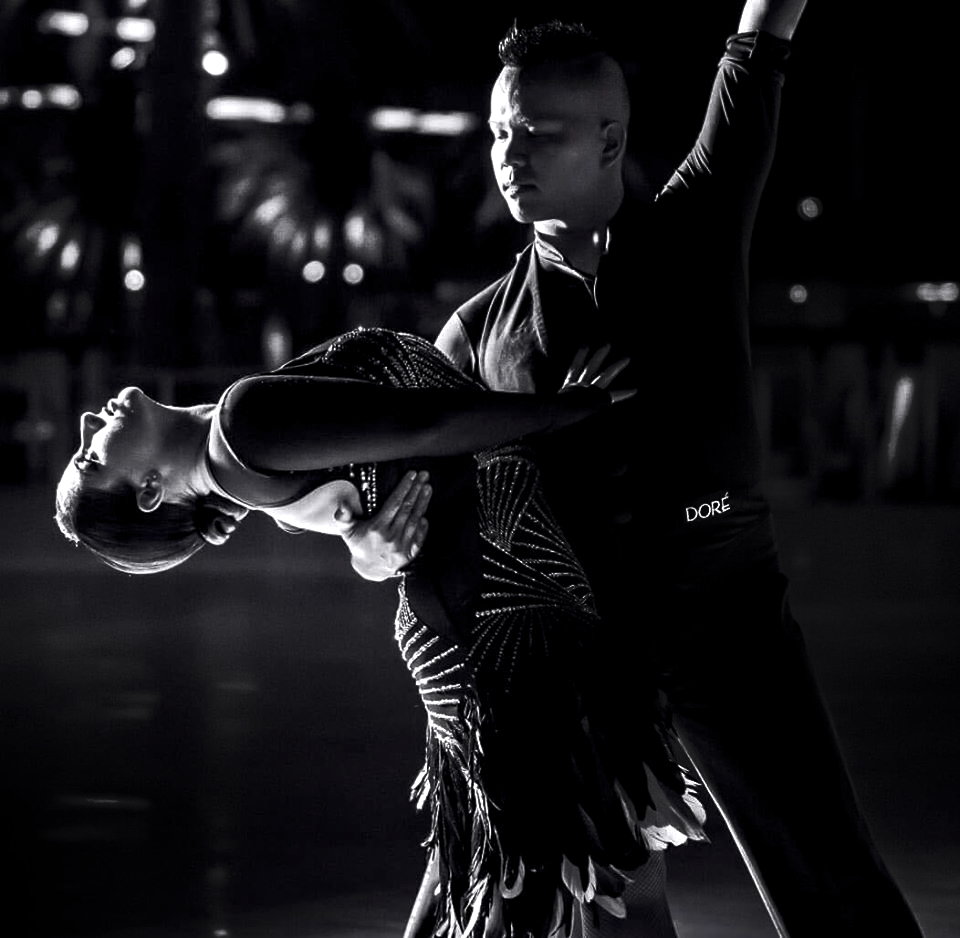

Our next event:
Spring Sensation
The NorCal Cosplay Ball has been bringing Dancing and Cosplay to San
Jose for more than two years. We are excited to start off 2020 with
Spring Sensation! Get ready to dance the night away to your favorite
songs from anime, video game, J-Pop, K-Pop, and more!
Purchase tickets on Eventbrite
Saturday, March 28, 2020
Get Tickets
Meet The Team

Instructor and Technical Director
Daniel Lee Tran (or just "Dan") is a Professional ballroom dancer
and is in charge of the technical side behind the Cosplay Ball.
Despite many accolades under his belt, including a United
States/World Cup title and various teaching awards, Dan's biggest
passion is getting people to dance for the sake of experiencing
their own personal growth. Cosplay Ball has provided him the
unique opportunity to combine his expertise in partner dancing
with his love for Anime and Gaming and provide the best dance
education to a young and inspired audience.
Our Venue
We are proud to hold our event at the beautiful
Silicon Valley Dance Club
3595 Steven's Creek Boulevard San Jose, CA, 95117